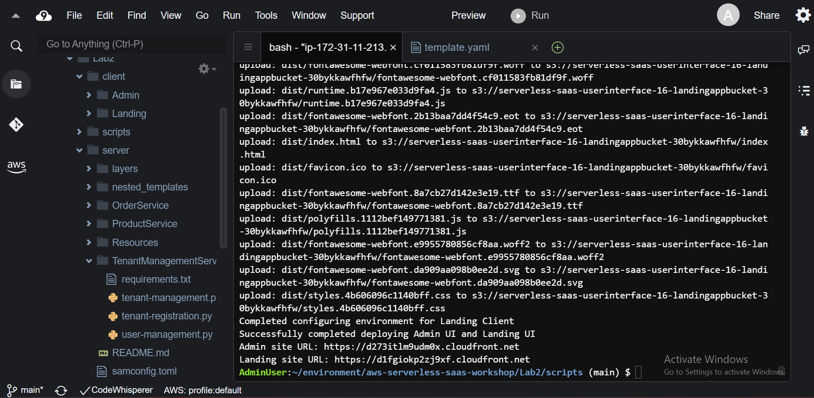
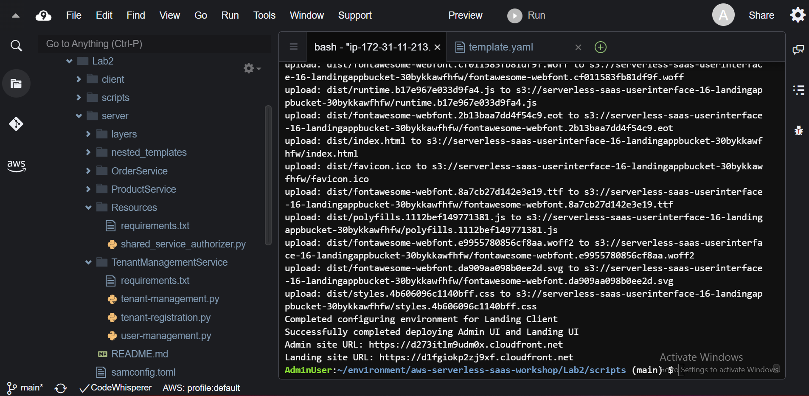
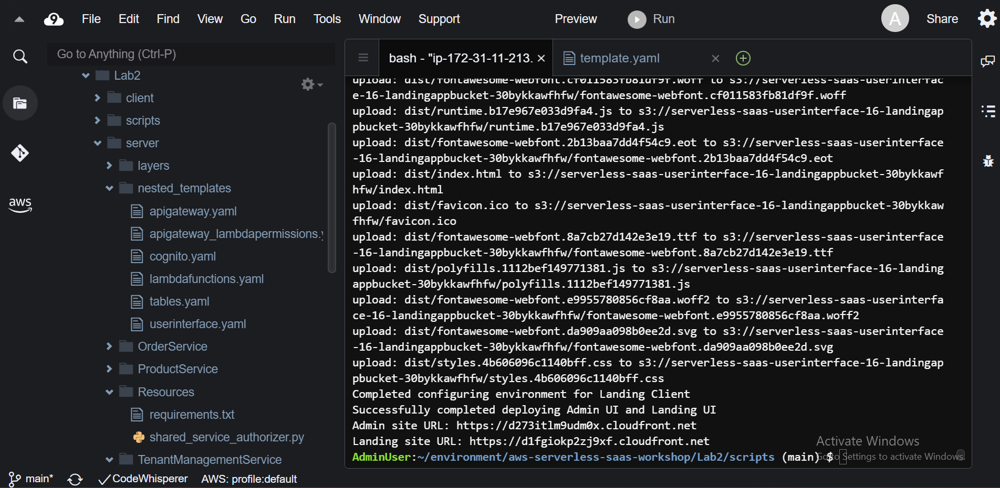

Trước khi bắt đầu modify ứng dụng, thêm hoặc thay đổi code, chúng ta hãy xem cấu trúc code trong Cloud9 IDE



Bây giờ chúng ta sẽ đi hoàn thiện code cho ứng dụng của chúng ta.
Chúng ta hãy vào thư mục Lab2/server/TenantManagementService và mở file tenant-management.py ở trong IDE của bạn và tìm tới method get_tenant. Lambda function này được sử dụng bởi method GET của API Gateway /tenant để lấy tất cả chi tiết của tenant. Method này chưa được thực thi, chúng ta thực thi method này để truy xuất dữ liệu từ table DynamoDB và trả kết quả về UI. Bạn có thể sử dụng code bên dưới và thêm vào function get_tenant mà chúng ta đã tìm được để hoàn thành.
def get_tenant(event, context):
tenant_id = event['pathParameters']['tenantid']
logger.info("Request received to get tenant details")
tenant_details = table_tenant_details.get_item(
Key={
'tenantId': tenant_id,
},
AttributesToGet=[
'tenantName',
'tenantAddress',
'tenantEmail',
'tenantPhone'
]
)
item = tenant_details['Item']
tenant_info = TenantInfo(item['tenantName'], item['tenantAddress'],item['tenantEmail'], item['tenantPhone'])
logger.info(tenant_info)
logger.info("Request completed to get tenant details")
return utils.create_success_response(tenant_info.__dict__)
Bạn sẽ thấy chúng ta đã sử dụng tenant_id để truy xuất dữ liệu từ table tenant_details và trả về kết quả. Bạn có thể thấy chúng ta đã sử dụng AttributesToGet để chỉ định các thuộc tính mà chúng ta muốn lấy từ table. Bạn có thể thêm vào các thuộc tính khác nếu cần thiết.
Tương tự ở trên, chúng ta sẽ làm tương tự với method create_user trong file user-management.py ở thư mục Lab2/server/TenantManagementService.
def create_user(event, context):
user_details = json.loads(event['body'])
logger.info("Request received to create new user")
logger.info(event)
tenant_id = user_details['tenantId']
response = client.admin_create_user(
Username=user_details['userName'],
UserPoolId=user_pool_id,
ForceAliasCreation=True,
UserAttributes=[
{
'Name': 'email',
'Value': user_details['userEmail']
},
{
'Name': 'custom:userRole',
'Value': user_details['userRole']
},
{
'Name': 'custom:tenantId',
'Value': tenant_id
}
]
)
logger.info(response)
user_mgmt = UserManagement()
user_mgmt.add_user_to_group(user_pool_id, user_details['userName'], tenant_id)
response_mapping = user_mgmt.create_user_tenant_mapping(user_details['userName'], tenant_id)
logger.info("Request completed to create new user ")
return utils.create_success_response("New user created")
Bạn sẽ thấy chúng ta đã sử dụng user_details để lấy thông tin của user từ request body và sử dụng tenant_id để thêm user vào group của tenant. Bạn có thể thêm vào các thuộc tính khác nếu cần thiết. Lưu ý cách mà tenantId và userRole được lưu dưới dạng custom attributes.
Trong service Registration là service điều phối onboarding flow. Registration service được gọi thông qua API Gateway dưới dạng public endpoint. Cái này là do thiết kế vì new tenants không thể được xác thực. Tuy nhiên, các endpoints được sử dụng để tạo ra tenant admin và tenant được bảo vệ bởi API Gateway resource policies capabilitty. Những endpoints này chỉ có thể được gọi từ service Tenant Registration.
Hiện tại, method register_tenant trong file tenant_registration.py ở thư mục Lab2/server/TenantManagementService đang còn trống. Hãy tìm đến method này và thêm đoạn code dưới đây vào.
def register_tenant(event, context):
try:
tenant_id = uuid.uuid1().hex
tenant_details = json.loads(event['body'])
tenant_details['tenantId'] = tenant_id
logger.info(tenant_details)
stage_name = event['requestContext']['stage']
host = event['headers']['Host']
auth = utils.get_auth(host, region)
headers = utils.get_headers(event)
create_user_response = __create_tenant_admin_user(tenant_details, headers, auth, host, stage_name)
logger.info (create_user_response)
tenant_details['tenantAdminUserName'] = create_user_response['message']['tenantAdminUserName']
create_tenant_response = __create_tenant(tenant_details, headers, auth, host, stage_name)
logger.info (create_tenant_response)
except Exception as e:
logger.error('Error registering a new tenant')
raise Exception('Error registering a new tenant', e)
else:
return utils.create_success_response("You have been registered in our system")
Bạn sẽ thấy đoạn code này tạo ra một tenant_id và thêm vào tenant_details. Sau đó, nó sẽ gọi method __create_tenant_admin_user và __create_tenant để tạo ra tenant admin và tenant. Bạn có thể thêm vào các thuộc tính khác nếu cần thiết.
Nhớ lưu lại các file đã chỉnh sửa bằng phím tắt Ctrl+S hoặc Cmd+S.